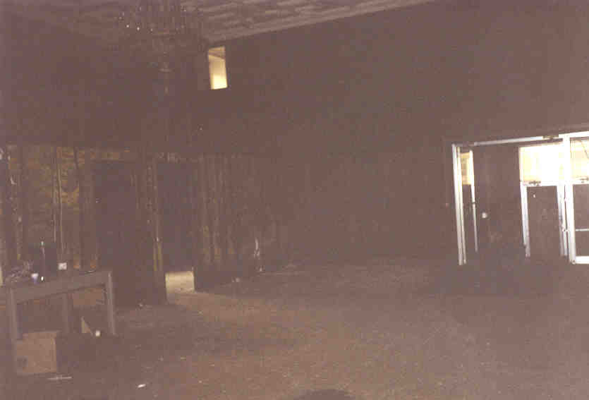
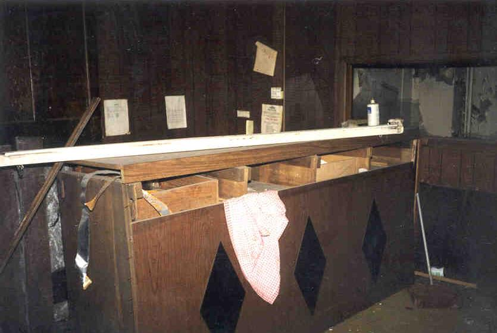
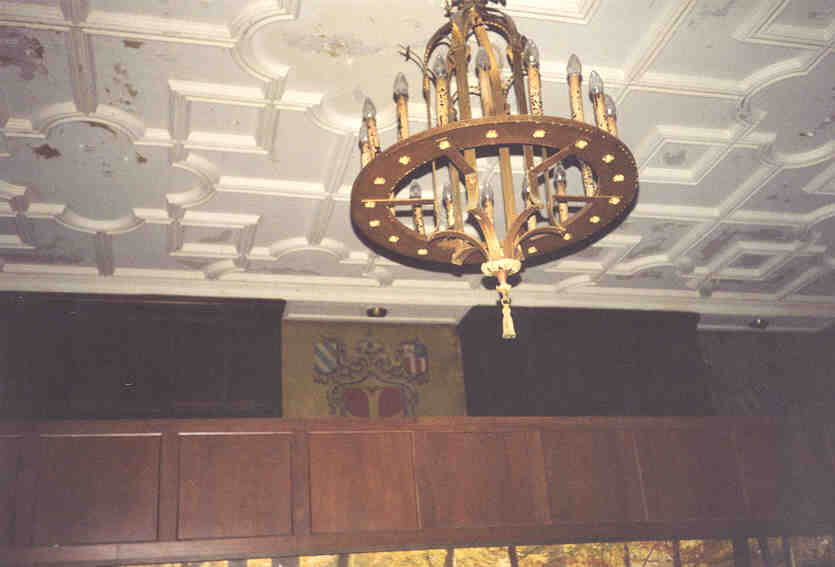
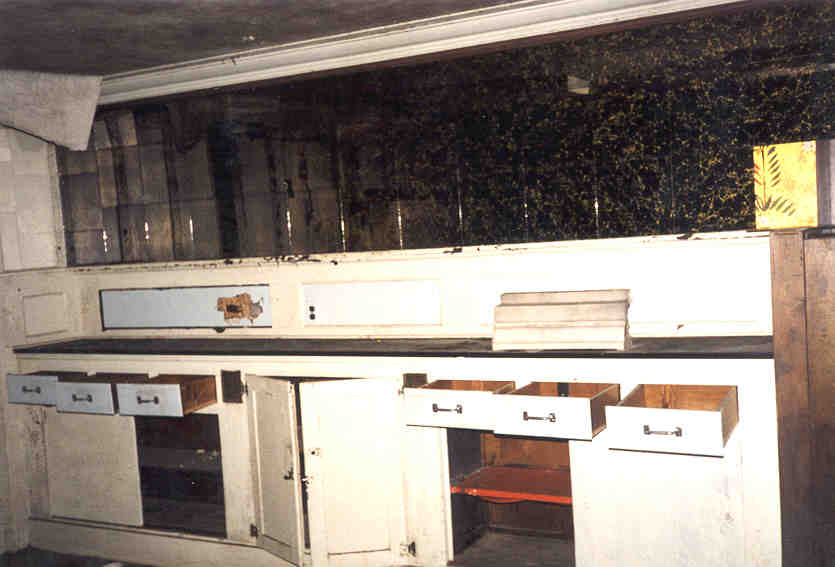
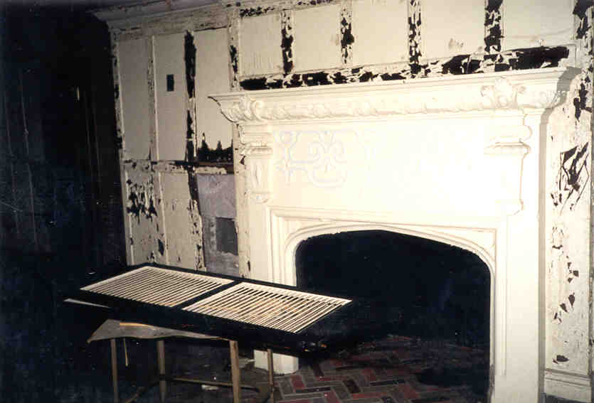
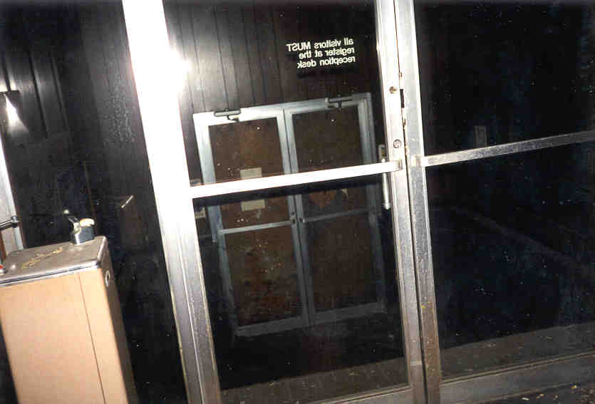

The Lobby
The lobby of the Seneca is still largely intact, although it bears more imprint from the building's days as the Ohio EPA than as a hotel. It occupies the northwest corner of the building and is separated from the street by offices. There is a chandelier, a front desk, and a boarded-over glass foyer where the main entrance used to be.



In a lounge area off the main lobby is some nice decoration: a long bureau backed with a mirror, along with a fireplace.


Just down the hall from the main lobby is a staircase which only goes up one flight. The door at the top is very securely sealed, which makes us wonder where the hell it goes. Maybe we'll find out eventually.

Back